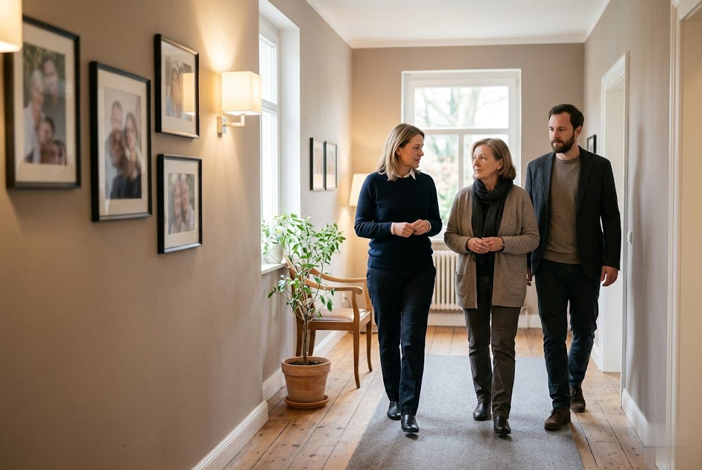
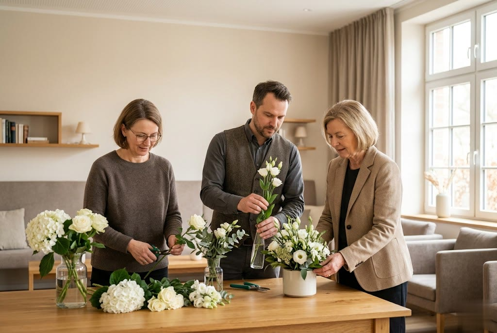
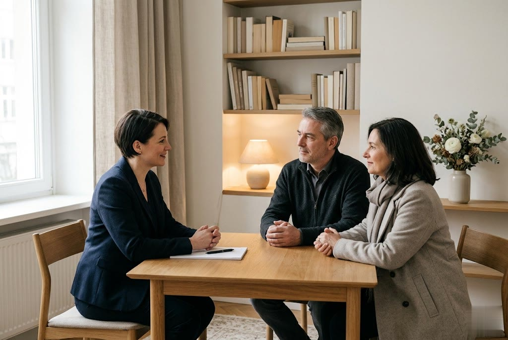
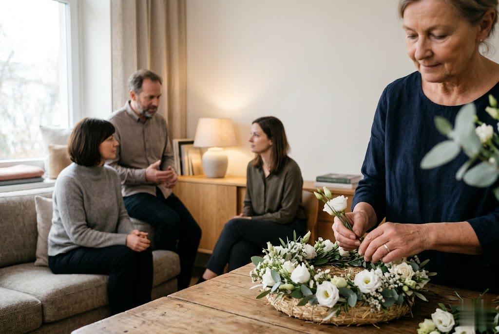

Medien
Eindrücke aus unserem Haus.
Fotos und Videos geben Ihnen einen ruhigen Einblick in unser Bestattungshaus, unsere Ausstellung und unsere Geschichte. So lernen Sie uns schon vor dem ersten Besuch ein wenig kennen.
Fotos
Unser Haus in Bildern.
Ein Eindruck von unseren Räumen, unserer Ausstellung und der Geschichte des Familienbetriebs Harald Frentzen.





Hinweis: Diese Vorschau verwendet würdevolle Platzhalterbilder. Für die finale Seite setzen wir gerne Ihre eigenen Aufnahmen ein.
Wir sind erreichbar
Lernen Sie uns persönlich kennen.
Am liebsten begrüßen wir Sie persönlich in unserem Haus · rufen Sie an, wir vereinbaren einen Termin.
02166 30 52 1